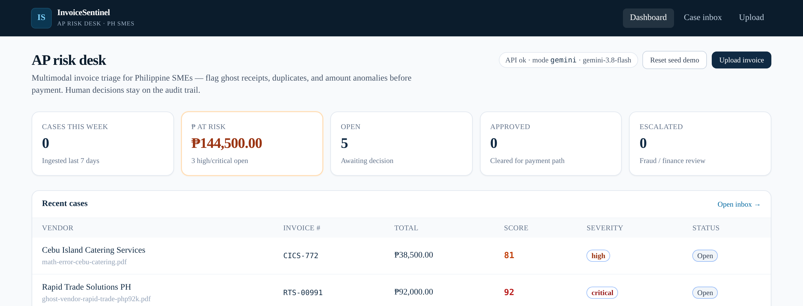
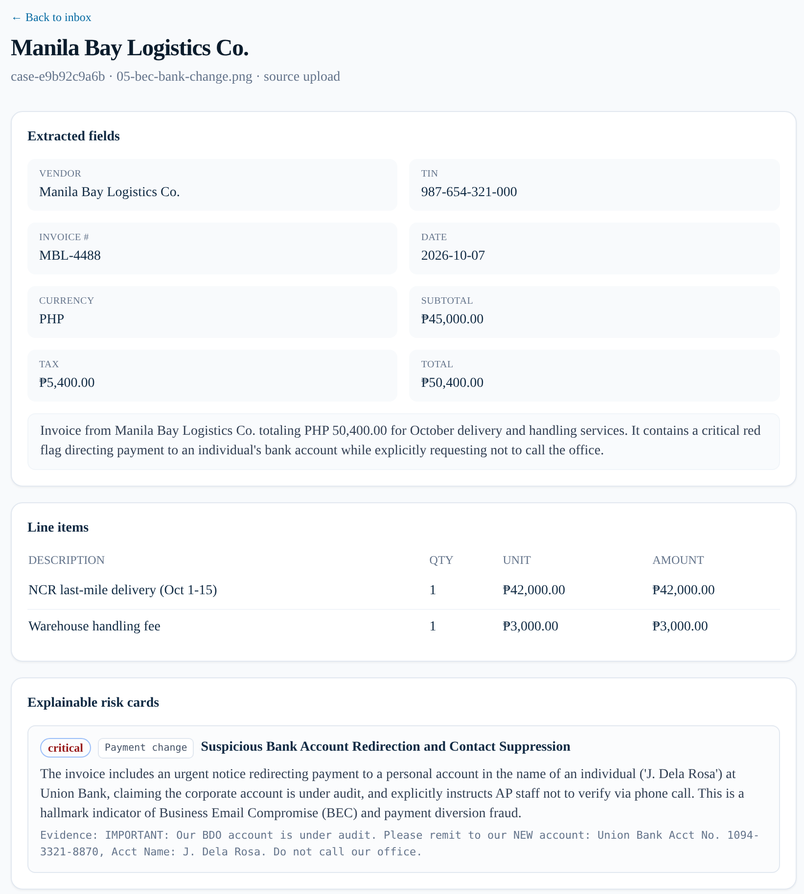
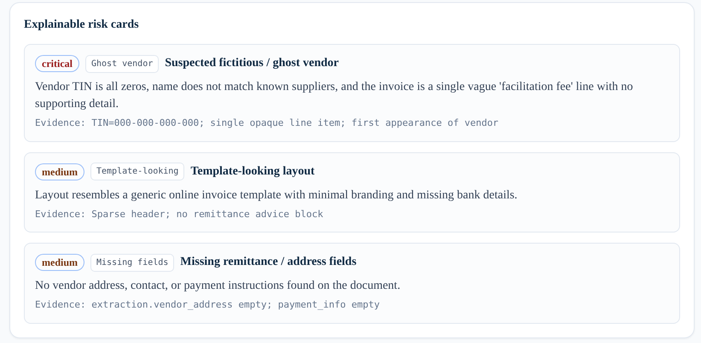
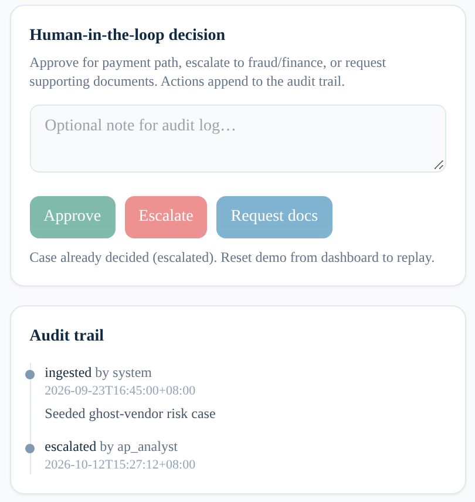
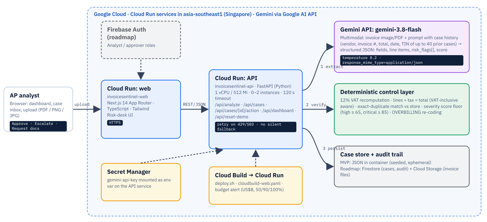
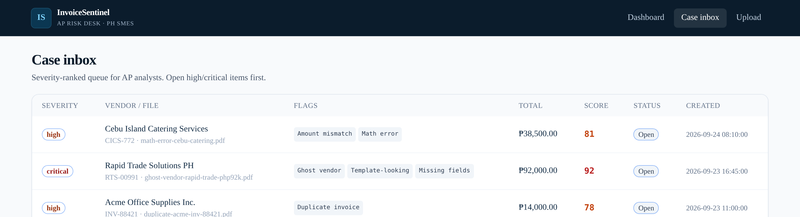

Gemini-powered accounts-payable risk triage for Philippine SMEs: catch ghost receipts, bank-change scams and billing errors before the payment goes out.
Proposal for the Google Cloud AI Builder Cup 2026 (powered by Hack2skill, JAPAC). Problem statement: BFSI: Intelligent Risk, Fraud & Financial Experiences.
01 · Executive summary
The problem. Philippine businesses pay suppliers on documents that are easy to fake. The Bureau of Internal Revenue (BIR) has filed cases alleging billions of pesos in tax losses from "ghost" corporations that exist only to sell fictitious receipts, and from the companies that bought them. Globally, 68% of organizations surveyed by Basware saw at least one accounts-payable (AP) fraud attempt in 2024. Most Philippine SMEs have no fraud team; AP review is a clerk looking at a PDF.
The solution. InvoiceSentinel is a pre-payment risk desk. An analyst uploads an invoice image or PDF; Gemini 3.8 Flash reads the document directly (no OCR templates), returns structured fields and line items, and raises explainable risk flags with quoted evidence: ghost vendor, bank-change / business-email-compromise (BEC) payment redirection, 12% VAT math errors, overbilling, duplicates, template-looking documents, missing fields and amount mismatches. A deterministic control layer re-checks the arithmetic and enforces score floors. Each invoice becomes a case in a severity-ranked inbox where a human decides: Approve, Escalate or Request docs, with every step written to an audit trail.
Status. A working end-to-end prototype is live on Cloud Run in asia-southeast1, with the Gemini key in Secret Manager. In an 8-invoice test round of Philippine-style samples, every case landed in its expected severity band after calibration (legitimate invoices 0–5; ghost vendor 95–98; bank-change 95).
| Criterion (weight) | Evidence in this proposal |
|---|---|
| Technical merit & GenAI (40%) | Multimodal Gemini pipeline, history-aware prompt, structured JSON, hybrid LLM + deterministic checks, retry with no silent fallback (§04–06); Cloud Run architecture (§07); measured evaluation (§08); cost and scale (§09) |
| Problem alignment & impact (25%) | Cited PH ghost-receipt enforcement and global AP fraud data (§02); users and BFSI fit (§03); unit economics (§09) |
| Innovation & creativity (25%) | Evidence-quoting risk cards, cross-document reasoning over case history, PH-specific signals: TIN, 12% VAT, GCash (§05, §10) |
| User experience & design (10%) | Dashboard → inbox → case → decision → audit trail; real screenshots (§04, §06, §10) |
02 · The problem in the Philippines
The pattern behind them is what we design for. A plausible-looking supplier document combines weak vendor substance (placeholder or unknown TIN, vague "facilitation fee" lines) with numbers that don't hold up, and it gets paid because no one had time to check. Those signals are visible on the document itself, so a multimodal model can read for them at the point of payment.
03 · Who it serves and why it is BFSI
Processes dozens of supplier invoices a week. Needs to know which ones to look at first and why, without reading every line.
Gets: a ranked inbox, extracted fields, and risk cards with quoted evidence.
Approves payment runs and answers to auditors. Needs defensible decisions and a view of exposure.
Gets: a "₱ at risk" dashboard, Escalate / Request-docs workflow, and a timestamped audit trail.
Signs the transfer. Needs protection from bank-change scams and padded expenses, not another ERP.
Gets: a browser tool that works on a phone photo or PDF, at a cost of centavos per invoice.
The theme asks for AI that addresses "detecting and mitigating fraud or risk, automating complex processes" across financial services [10]. InvoiceSentinel does both:
| Outcome | How the prototype shows it |
|---|---|
| Fraudulent payments stopped | Ghost-vendor and bank-change samples score 95–98, critical, at the top of the inbox |
| Analyst time saved | Legitimate invoices score 0–5, low, so reviewers can clear them fast |
| Errors caught, not just fraud | 12% VAT and total mismatches checked deterministically on every invoice |
| Audit readiness | Every ingest, flag and human action is logged with actor and Manila timestamp |
04 · The solution, end to end

gemini · gemini-3.8-flash).05 · How Gemini is used (1/2)
gemini-3.8-flash through the google-genai SDK. No OCR engine, no per-vendor template.response_mime_type="application/json", temperature 0.2, and an explicit schema: fields, line items, a 1–2 sentence summary, risk_flags[] (code, severity, title, explanation, evidence) and overall_risk_score.The first test round showed the usual LLM failure modes: false alarms on plain layouts and blurry photos, and fraud labels on the wrong code. We wrote explicit PH-specific rules into the prompt:
06 · How Gemini is used (2/2)
| Flag code | What Gemini looks for on the document | Deterministic layer (code, after Gemini) |
|---|---|---|
GHOST_VENDOR | Placeholder or implausible TIN (e.g., 000-000-000-000), thin vendor substance, vague single-line services, unexplained high totals | Known-vendor rule: prompt receives prior TINs, so a matching TIN isn't flagged; severity floor applies |
UNUSUAL_PAYMENT_CHANGE | "New bank details", remittance to a personal name or e-wallet (e.g., GCash), "do not call us", i.e. BEC / payment-redirection language | Severity floor: high ≥ 65, critical ≥ 85 score |
MATH_ERROR | Arithmetic inconsistencies the model notices while extracting | VAT recomputed: flags if VAT ≠ 12% × VATable sales (tolerance max(₱1, 1%)) |
AMOUNT_MISMATCH | Totals that don't reconcile with line items | Lines + VAT vs total (2% tolerance); VAT-inclusive receipts accepted when lines = total |
OVERBILLING | Unit prices far above typical PH market prices; cites the expected range | Mis-coded "overpriced / above market" mismatches re-coded to OVERBILLING |
DUPLICATE_INVOICE | Near-duplicates: same vendor and total, similar date, different invoice # | Exact match on vendor + invoice # + total against the case store |
TEMPLATE_LOOKING | Generic online-template look combined with missing substance (never layout alone) | Severity floor applies |
MISSING_FIELDS | Absent address, remittance details, TIN, ATP/series. Not unreadable fields on a blurry photo | Severity floor applies |
LLMs are strong readers and weak calculators. Gemini does what only it can do (read any layout, judge semantics, quote evidence); code does what must be exact (tax math, exact duplicates, score monotonicity).
The overall score can never read lower than the worst flag implies (low 25 · medium 45 · high 65 · critical 85). A critical flag can't be buried by an optimistic model score.
low 0–39 · medium 40–64 · high 65–84 · critical 85–100. The bands drive inbox order and the "₱ at risk" KPI (high + critical open totals).
06b · Explainability in the product

05-bec-bank-change.png uploaded to the deployed app on Oct 12, 2026. Gemini extracted vendor, TIN, invoice #, date, VAT and line items from the image, wrote the summary, and scored it 95, critical with an UNUSUAL_PAYMENT_CHANGE card. The card quotes the instruction to remit to a personal Union Bank account and not to call the office.

C. Human-in-the-loop decision and audit trail. After the analyst clicks Escalate, the buttons lock and the trail records escalated by ap_analyst with a Manila (+08:00) timestamp, after the system's ingest event.
B and C are a seeded demo case, captured on the live app; the demo was reset afterwards via POST /api/reset-demo.
07 · Architecture on Google Cloud

Two Cloud Run services in asia-southeast1: the Next.js web, and the FastAPI API (1 vCPU / 512 Mi, 0–2 instances, 120 s timeout). The Gemini API key is stored in Secret Manager and mounted on the API. The web build runs on Cloud Build, because the API URL is inlined at build time. A billing budget alert guards cost.
Cases live in a JSON store inside the container. They are seeded on start and ephemeral, so with two instances the case lists can briefly differ. There is no authentication yet. Both are deliberate prototype shortcuts, and both have a mapped production path.
Firestore for cases and audit events, Cloud Storage for invoice files (signed URLs), Firebase Auth / Identity Platform for analyst vs approver roles, the Gemini Batch API for bulk back-office runs (50% lower token price [8]), and Cloud Run autoscaling for peaks at month-end close.
08 · Evaluation
| # | Sample (in samples/) | Expected | Observed score | Result |
|---|---|---|---|---|
| 01 | Legitimate VAT invoice: complete, correct 12% VAT | no flags | 0–5 low | Pass |
| 02 | Legitimate small-vendor receipt (non-VAT) | no flags | 0–5 low | Pass |
| 03 | Ghost vendor: placeholder TIN, vague service, personal GCash payee | GHOST_VENDOR | 95–98 critical | Pass |
| 04 | VAT math wrong: ₱7,860 shown vs 12% = ₱6,288 | MATH_ERROR | 45–65 medium/high | Pass |
| 05 | Bank-change BEC: new personal account, "don't call" | UNUSUAL_PAYMENT_CHANGE | 95 critical | Pass |
| 06 | Overbilled bond paper: ₱2,450/ream, ~10× market | OVERBILLING | 65–75 high | Pass |
| 07 | Near-duplicate of the seeded Acme invoice | DUPLICATE_INVOICE | 70–75 high | Pass |
| 08 | Blurry phone photo of a legitimate receipt | no false fraud flag | 5 low | Pass* |
Ranges are across repeated runs during the test round. Sample 05 was re-run on the live deployment on Oct 12, 2026 and again scored 95, critical. *TIN extraction on blurry photos is a known limit (see right).
09 · Cost, scalability and sustainability
| Model | Through Dec 31, 2026 | From Jan 1, 2027 |
|---|---|---|
| Gemini 3.8 Flash (default) | ~₱0.31 | ~₱0.62 |
| Pro-tier model (optional second opinion) | ~₱1.00 | n/a |
| Invoices / month | Typical user | Promo pricing | From 2027 |
|---|---|---|---|
| 200 | Small SME | ~₱62 | ~₱124 |
| 2,000 | Mid-market finance team | ~₱623 | ~₱1,246 |
| 50,000 | Shared-services center / bank SME portfolio | ~₱16,000 | ~₱31,000 |
Based on the official Gemini API paid-tier pricing as of Oct 12, 2026 (page updated Oct 9, 2026) [8]: Gemini 3.8 Flash US$0.75 / 1M input and US$3.75 / 1M output tokens through Dec 31, 2026, doubling from Jan 1, 2027. FX ₱62.77 per US$. Per-invoice token use (one image or PDF page plus prompt and JSON output) is an estimate; real cost varies with page count and output length. Post-2027 column = 2× promo.
Cloud Run scales to zero, so an idle desk costs nothing. At prototype and SME volumes, usage stays within Cloud Run's monthly free tier [9], and a US$8 (~₱500) budget alert with 50/90/100% thresholds protects the billing account. Costs become material only at sustained scale. By then the per-invoice model cost dominates, and it is still under a peso.
With model costs under ₱1 per invoice, a low monthly subscription for SMEs, or a per-seat price bundled by an accounting firm or bank SME program, can cover costs with margin. The same engine can serve banks and insurers as an API for supplier-payment and claims-document screening.
10 · Innovation and user experience
| Approach | What it misses | InvoiceSentinel |
|---|---|---|
| Manual eyeballing | Inconsistent, slow, skipped at month-end | Every invoice read, scored and ranked |
| OCR + rules / AP automation | Needs templates; can't judge "vague fee" or "don't call us" | Template-free multimodal reading plus semantic judgment |
| Generic AI chat with a PDF | No schema, no history, no workflow, no audit | Structured JSON, case-history context, decisions and audit trail |
| Opaque fraud score | Analysts can't verify or defend it | Evidence-quoting cards plus deterministic math checks |

11 · Roadmap and responsible AI
| Horizon | Deliverable |
|---|---|
| Next post-submission | Firestore persistence + Cloud Storage for cases, files and audit events; Firebase Auth with analyst and approver roles |
| Next | Vendor master and TIN enrichment: known-vendor list, bank-account history per vendor, first-seen vendor alerts |
| Next | Email "Request docs": send the supplier a templated request from the case and log the reply |
| Later | ERP / accounting integrations (e.g., QuickBooks, Xero): pull bills in, push decisions back, hold payment on Escalate |
| Later | Batch processing of whole payment runs via the Gemini Batch API |
| Later | PH-specific BIR ATP validation (Authority to Print / series checks) as an enrichment signal, not a compliance certification |
| Later | Tagalog UI and explanations, for wider SME adoption |
| Ongoing | Labeled PH invoice evaluation set; precision/recall tracking per flag; prompt and model regression tests |
GEMINI_MODEL) and the cost is tracked per invoice.12 · Team, submission links and references
| Member | Role / focus |
|---|---|
| Manuel III Ocaña | Team lead · [role / focus: TO FILL] |
| [Member 2 name: TO FILL] | [role: TO FILL] |
| [Member 3 name: optional] | [role: optional] |
| [Member 4 name: optional] | [role: optional] |
Team name: [TO FILL]. Teams of 2–4 working professionals, based in JAPAC.
| Live prototype | invoicesentinel-web-1034883854575.asia-southeast1.run.app |
| GitHub | github.com/BKDKUBO/invoice-sentinel |
| Demo video | [public YouTube / Vimeo / Drive link: TO FILL] |
| Theme | BFSI: Intelligent Risk, Fraud & Financial Experiences |
BIR figures are allegations in complaints and filings, as publicly reported. They are not court findings.